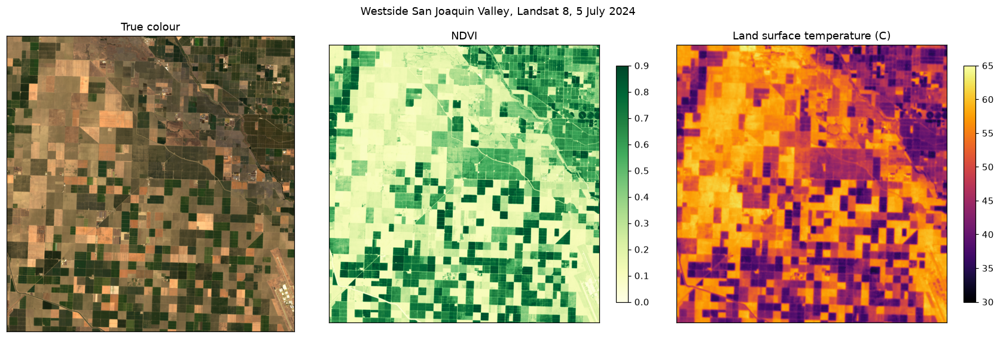
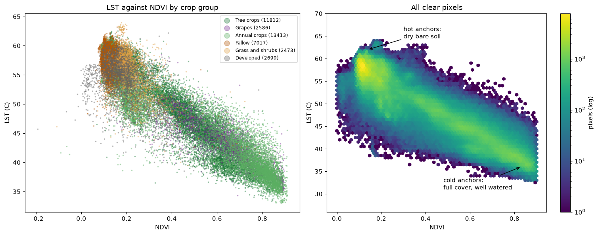
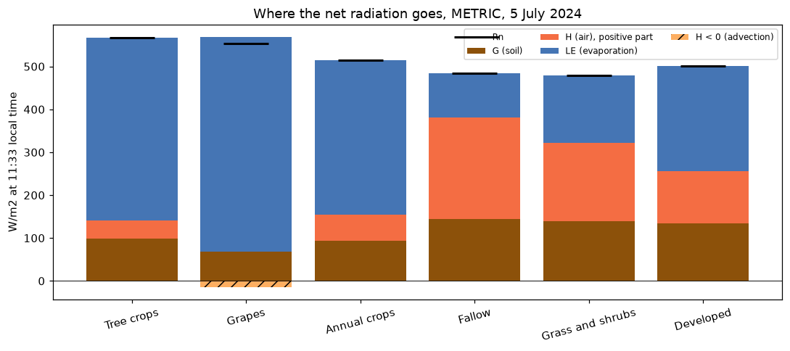
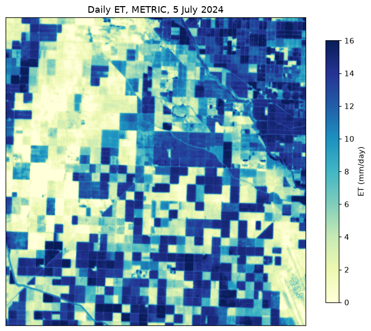

Evapotranspiration (ET) is the water that leaves the land surface as vapour: evaporation from soil and open water, transpiration through plant leaves, and evaporation of water intercepted on leaves. It is the largest outflow of the water balance on irrigated land and the quantity water managers most want to measure, yet it cannot be seen directly. What satellites can see is its energy signature: turning liquid water into vapour takes energy, and a surface that evaporates stays cooler than one that does not. This notebook introduces the surface energy balance behind every model in this chapter, surveys the family of satellite ET methods used operationally (the OpenET ensemble and its relatives), and looks at a real Landsat scene of the San Joaquin Valley in California to see the cool irrigated fields and hot fallow land that anchor these models.
Overview
What evapotranspiration is and why it matters
Evaporation from bare soil, wet leaves and open water, and transpiration, the water plants draw from the root zone and release through their stomata while they take up CO2.
On irrigated farmland ET is the consumptive use of water: the part that does not return to rivers or aquifers. Water rights, groundwater sustainability plans (California’s SGMA), irrigation scheduling and drought monitoring all depend on it.
A field measurement of ET (eddy covariance tower, weighing lysimeter) covers a few hectares at most. Satellite models extend those point measurements to every field.
Two ways to look at ET
The water balance closes the books on water: ET = P + I - R - D - dS (precipitation plus irrigation minus runoff, drainage and the change in soil storage). Most terms are unknown at the field scale. The energy balance closes the books on energy at the surface:
Rn = G + H + LE
Term
Name
Meaning
Rn
net radiation
shortwave from the sun minus what is reflected, plus longwave from the sky minus what the surface emits
G
soil heat flux
energy conducted into the ground
H
sensible heat flux
energy that warms the air above the surface
LE
latent heat flux
energy used to evaporate water; L is the latent heat of vaporization (about 2.45 MJ per kg) and E the evaporation rate
All four are in W m-2. Satellites give Rn (from reflectance and temperature) and G (from Rn and vegetation) quite well. H is the hard part, and LE follows as the residual LE = Rn - G - H. That is why these models are called residual energy balance models.
From watts to millimetres
One kilogram of water per square metre is a layer 1 mm deep, so
ET (mm/h) = 3600 LE / lambda, with lambda = (2.501 - 0.00236 T) 10^6 J kg-1 (T in C).
A latent heat flux of 680 W m-2 held for an hour evaporates 1 mm. Over a day, 1 mm of ET needs 2.45 MJ m-2, an average of 28.4 W m-2 over 24 hours.
Typical midday fluxes
Surface (summer, clear sky)
Rn
G
H
LE
Well watered crop, full cover
550 to 700
30 to 80
-100 to 100
450 to 750
Dry bare soil or fallow
400 to 500
80 to 150
250 to 400
0 to 50
Deep open water
600 to 700
stored in the water
small
most of the rest
H can be negative over irrigated crops in a desert: hot dry air flowing over a wet field gives up heat to it, and LE can then exceed Rn - G. This advection is common in California and matters in notebooks 05 and 06.
Why thermal images
H = rho cp dT / rah: sensible heat grows with the difference dT between the surface and the air and shrinks with the aerodynamic resistance rah. An evaporating surface spends energy on LE and stays cool, so its dT and H are small. Land surface temperature (LST) from a thermal band is therefore the main signal. Two complications drive the model design:
Radiometric is not aerodynamic temperature. A thermal sensor sees a mix of sunlit soil and canopy, while H responds to the temperature at the height where heat is exchanged (z0h). The difference can be several kelvin over sparse crops.
Air temperature is not known at 30 m. Weather stations are tens of kilometres apart.
SEBAL and METRIC solve both by never using air temperature directly: they assume dT is a linear function of LST and calibrate the line at two anchor pixels, one wet and cool, one dry and hot (notebooks 05 and 06). Two-source models instead split LST into soil and canopy parts (notebook 08).
A family tree of satellite ET methods
Family
Model
Idea
Main inputs
Used in
One-source residual
SEBAL (Bastiaanssen et al. 1998)
dT = a + b Ts from hot and cold pixels, no ET at the hot pixel
LST, reflectance, wind
05
METRIC (Allen et al. 2007), eeMETRIC
SEBAL with the cold pixel at 1.05 alfalfa reference ET, daily scaling with the reference ET fraction
as SEBAL plus reference ET
06, OpenET
geeSEBAL (Laipelt et al. 2021)
SEBAL with automated anchors on Earth Engine
as SEBAL
OpenET
SEBS (Su 2002)
physical H with roughness for heat and dry and wet limits
LST, air temperature, wind
Simplified and contextual
SSEBop (Senay et al. 2013)
ET fraction from LST between a cold limit (c Tmax) and a hot limit Tc + dT
LST, Tmax, NDVI, reference ET
07, OpenET
S-SEBI (Roerink et al. 2000)
dry and wet edges in the albedo and LST scatter
LST, albedo
07
Triangle (Jiang and Islam 2001)
Priestley-Taylor parameter from the LST and vegetation triangle
LST, NDVI
07
Priestley-Taylor
PT-JPL (Fisher et al. 2008)
potential ET reduced by plant and soil moisture constraints
Rn, NDVI, air temperature, humidity
07, OpenET
Two-source
TSEB (Norman et al. 1995), ALEXI and DisALEXI (Anderson et al. 1997, 2018)
soil and canopy temperatures and fluxes; ALEXI uses the morning rise in temperature from geostationary satellites
LST, LAI, air temperature, wind
08, OpenET
Penman-Monteith
MOD16 (Mu et al. 2011)
Penman-Monteith with surface conductances from LAI and weather
LAI, weather
09, 11
Crop coefficient
SIMS (Melton et al. 2012)
crop coefficient from fraction of cover times reference ET, no thermal band
NDVI, crop type, reference ET
OpenET
OpenET (Melton et al. 2022) runs six of these models (ALEXI/DisALEXI, eeMETRIC, geeSEBAL, PT-JPL, SIMS and SSEBop) on Landsat for the western United States and publishes their ensemble. Its accuracy assessment against flux towers (Volk et al. 2024) found that the ensemble was among the most accurate estimates over croplands, while single models did better or worse depending on crop and season. This chapter writes each model from its equations so you can see where those differences come from.
From an instant to a season
A Landsat image is a snapshot at about 10:30 to 11:30 local time. Two assumptions carry it to a whole day:
Evaporative fractionEF = LE / (Rn - G) stays constant during the day (SEBAL).
Reference ET fractionETrF = ET / ETr stays constant, where ETr is the ET of a well watered alfalfa reference computed from weather (METRIC). This also carries the effect of advection and of cloudy afternoons through the reference.
Between clear images, the fraction (not ET itself) is interpolated in time and multiplied by the daily reference ET (notebook 10).
The Surface Energy Balance with GeoLattice
geolattice.rsense.surface_energy_balance (imported as seb) implements every step of the chapter. Its functions take NumPy arrays or xarray DataArrays and keep units in their attributes; model runs return an xr.Dataset on the Landsat grid.
The chapter helper seb_data.py (imported as sd) downloads and caches the scenes, so each notebook runs on its own. sd.load_scene returns one analysis-ready Landsat stack, and sd.energy_inputs and sd.run_metric_scene repeat the chain of notebooks 03 to 06 for the later notebooks.
Learning objectives
Define ET and its parts, and convert between latent heat flux (W m-2) and ET (mm).
Write the surface energy balance and give typical values of each term over crops, soil and water.
Explain why land surface temperature is the key signal and why air temperature is avoided.
Place SEBAL, METRIC, SSEBop, S-SEBI, PT-JPL, TSEB, MOD16 and SIMS in a family tree, and say what each needs.
Read a Landsat scene’s NDVI and LST and recognise the wet and dry ends of the LST and NDVI scatter.
Run METRIC once and check that Rn = G + H + LE holds for crops and fallow land.
5 July 2024, 18:33 UTC (11:33 local), path 42 row 35; surface reflectance and surface temperature over the Westside San Joaquin Valley around Five Points (about 28 x 29 km at 30 m), from Microsoft Planetary Computer
USDA Cropland Data Layer 2024
crop type of every 30 m pixel, from CropScape
Copernicus DEM GLO-30
elevation
ERA5 hourly and daily weather
from the Open-Meteo archive, at the scene centre
The first run downloads about 25 MB and caches it under Data/08_remote_sensing/08_12_surface_energy_balance/westside/.
Contents
Setup
The scene
Crops, fallow land and temperature
The LST and NDVI scatter
The energy balance of crops and fallow land
From flux to millimetres
Summary and exercises
Setup
Installation. This notebook needs installation option 5 (core, spatial analysis, spatial statistics, geostatistics and remote sensing): pip install "geolattice[remote-sensing]". See “Installation options” in the GeoLattice README.
Code
import warnings # warning controlwarnings.filterwarnings("ignore") # hide routine library warningsfrom pathlib import Path # file pathsimport matplotlib.pyplot as plt # figuresimport numpy as np # arraysimport pandas as pd # tablesimport rioxarray # noqa: F401 (registers the .rio accessor)import xarray as xr # labelled rastersimport geolattice # GeoLatticeimport geolattice.rsense.surface_energy_balance as seb # energy balance and ET modelsimport seb_data as sd # chapter helper: downloads, caches and loads the scenesplt.rcParams.update({"figure.dpi": 110}) # figure resolutionOUT = Path("outputs") # results written by this chapterOUT.mkdir(exist_ok=True) # create it if neededprint("GeoLattice", geolattice.__version__, "| data folder", sd.DATA.relative_to(sd.DATA.parents[3])) # versions and pathsGROUPS = {"Tree crops": [75, 204, 76, 211, 212, 217, 66, 67, 72], "Grapes": [69], # CDL codes per crop group"Annual crops": [54, 2, 1, 36, 37, 208, 49, 209, 47, 227, 225, 24, 21, 28, 51],"Fallow": [61], "Grass and shrubs": [176, 152, 131], "Developed": [121, 122, 123, 124]}COLORS = {"Tree crops": "#1b7837", "Grapes": "#7b3294", "Annual crops": "#5aae61", # one colour per group"Fallow": "#b35806", "Grass and shrubs": "#e0a24a", "Developed": "#636363"}
GeoLattice 0.3.49 | data folder GeoLattice/Data/08_remote_sensing/08_12_surface_energy_balance
The scene
sd.load_scene() returns the stack notebook 01 builds: six reflectance bands, the Collection 2 surface temperature (lst, K), the thermal radiance terms, a clear-sky mask from QA_PIXEL, elevation, the 2024 crop map and the weather at the overpass in the attributes.
Code
ds = sd.load_scene() # Landsat 8, 5 July 2024, Westside San Joaquin Valleyprint(ds.attrs["scene_id"], "|", ds.attrs["datetime"], "UTC |", dict(ds.sizes), "| CRS", ds.rio.crs) # what was loadedprint(f"clear pixels {float(ds.clear.mean()):.1%} | sun elevation {ds.attrs['sun_elevation']:.1f} deg") # cloud-free share and sunprint(f"ERA5 at overpass: air {ds.attrs['t_air_c']:.1f} C, RH {ds.attrs['rh']:.0f} %, wind {ds.attrs['u10']:.1f} m/s, "f"shortwave {ds.attrs['rs_wm2']:.0f} W/m2 | daily max {ds.attrs['tmax_c']:.1f} C") # weather in the attributes
LC08_L2SP_042035_20240705_02_T1 | 2024-07-05 18:33:27.252130 UTC | {'y': 953, 'x': 926} | CRS EPSG:32611
clear pixels 100.0% | sun elevation 66.5 deg
ERA5 at overpass: air 39.8 C, RH 9 %, wind 2.2 m/s, shortwave 854 W/m2 | daily max 46.6 C
The overpass came during the early July 2024 heat wave: ERA5 gives a daily maximum above 46 C at the scene centre (gridMET, used in notebook 02, gives 42 C), 9 % relative humidity at the time of the image and full sunshine. These are conditions of very high evaporative demand.
Code
m = ds.clear.astype(bool) # clear-sky pixelsndvi = seb.ndvi(ds.red, ds.nir).where(m) # NDVIlst_c = (ds.lst -273.15).where(m) # surface temperature in Crgb = np.clip(np.dstack([ds.red, ds.green, ds.blue]) *3.0, 0, 1) # stretched true colourext = [float(ds.x.min()), float(ds.x.max()), float(ds.y.min()), float(ds.y.max())] # map extentfig, ax = plt.subplots(1, 3, figsize=(16, 5.2)) # three mapsax[0].imshow(rgb, extent=ext); ax[0].set_title("True colour") # imageim = ax[1].imshow(ndvi, extent=ext, cmap="YlGn", vmin=0, vmax=0.9); ax[1].set_title("NDVI") # vegetationplt.colorbar(im, ax=ax[1], shrink=0.8) # NDVI scaleim = ax[2].imshow(lst_c, extent=ext, cmap="inferno", vmin=30, vmax=65); ax[2].set_title("Land surface temperature (C)") # LSTplt.colorbar(im, ax=ax[2], shrink=0.8) # LST scalefor a in ax: # every map a.set_xticks([]); a.set_yticks([]) # hide coordinatesplt.suptitle("Westside San Joaquin Valley, Landsat 8, 5 July 2024"); plt.tight_layout(); plt.show() # draw

Crops, fallow land and temperature
The crop map assigns every pixel a CDL class. Grouping the classes into tree crops, grapes, annual crops, fallow, rangeland and developed land shows how surface temperature follows water use.
Code
group = xr.full_like(ds.cdl, -1, dtype="int8") # crop group index per pixelfor i, codes inenumerate(GROUPS.values()): # every group group = group.where(~ds.cdl.isin(codes), i) # pixels whose CDL code is in the groupnames =list(GROUPS) # group names in ordertab = pd.DataFrame({"group": group.values.ravel(), "ndvi": ndvi.values.ravel(), "lst_c": lst_c.values.ravel()}).dropna() # one row per pixeltab = tab[tab.group >=0] # keep grouped pixelstab["group"] = tab.group.map(dict(enumerate(names))) # group namessummary = tab.groupby("group").agg(share=("ndvi", "size"), ndvi=("ndvi", "median"), lst_c=("lst_c", "median")) # medians per groupsummary["share"] = (100* summary.share / m.sum().item()).round(1) # percent of the scenesummary.loc[names].round(2) # table in group order
share
ndvi
lst_c
group
Tree crops
28.0
0.48
47.19
Grapes
6.3
0.63
44.03
Annual crops
31.7
0.33
48.53
Fallow
16.5
0.12
57.90
Grass and shrubs
5.7
0.21
56.30
Developed
6.3
0.18
54.20
In the medians, fallow land is 9 to 14 K hotter than the tree crops, grapes and annual crops, and rangeland and developed land are nearly as hot as fallow. Grapes, the greenest group, are also the coolest. The groups overlap: tree orchards include young plantings and wide rows of bare soil between the trees, and annual crops include fields that were just harvested or planted. The scatter of all pixels shows the overall structure.
The LST and NDVI scatter
Plotting LST against NDVI gives the characteristic triangle or trapezoid of energy balance studies. Its cool upper right corner holds dense, well watered vegetation (the cold anchor region), its hot lower left corner dry bare soil (the hot anchor region). The upper edge of the cloud, hottest LST for each NDVI, is the dry edge; the cool lower boundary, the wet edge.
Code
sample = tab.sample(40000, random_state=0) # a random subset for plottingfig, ax = plt.subplots(1, 2, figsize=(14, 5.5)) # scatter and densityfor g in names: # every crop group s = sample[sample.group == g] # its pixels ax[0].scatter(s.ndvi, s.lst_c, s=2, alpha=0.35, color=COLORS[g], label=f"{g} ({len(s)})") # pointsax[0].set_xlabel("NDVI"); ax[0].set_ylabel("LST (C)"); ax[0].legend(markerscale=6, fontsize=8) # labelsax[0].set_title("LST against NDVI by crop group") # titleh = ax[1].hexbin(tab.ndvi, tab.lst_c, gridsize=70, bins="log", cmap="viridis", extent=(0, 0.9, 28, 68)) # density of all pixelsplt.colorbar(h, ax=ax[1], label="pixels (log)") # scaleax[1].annotate("cold anchors:\nfull cover, well watered", (0.83, 36), xytext=(0.48, 31), arrowprops=dict(arrowstyle="->")) # wet cornerax[1].annotate("hot anchors:\ndry bare soil", (0.14, 62), xytext=(0.3, 64.5), arrowprops=dict(arrowstyle="->")) # dry cornerax[1].set_xlabel("NDVI"); ax[1].set_ylabel("LST (C)"); ax[1].set_title("All clear pixels") # labelsplt.tight_layout(); plt.show() # drawprint("correlation of LST and NDVI:", round(float(np.corrcoef(tab.ndvi, tab.lst_c)[0, 1]), 2)) # strength of the relation

correlation of LST and NDVI: -0.93
LST falls by about 25 K from bare soil (near 60 C) to full cover (near 35 C), and the strong negative correlation (-0.93) is the evaporative cooling the models use. The spread at a given NDVI is just as informative: at NDVI 0.3 the coolest pixels are close to 20 K cooler than the hottest, because a sparse canopy over wet soil evaporates far more than the same canopy over dry soil. NDVI alone (as in crop coefficient methods) cannot see that difference; the thermal band can.
seb.select_anchors searches the two corners automatically with the Allen et al. (2013) percentile rules (notebook 05 explains them):
Code
inp = sd.energy_inputs(ds) # NDVI, albedo, net radiation, soil heat flux, roughness, anchors (notebooks 03 and 04)seb.anchor_report(inp["anchors"]).assign(lst_c=lambda d: d.lst -273.15, # anchor table in C crop=lambda d: [sd.cdl_name(ds.cdl.values[r.iy, r.ix]) for r in d.itertuples()]) # crop at each anchor
iy
ix
n_candidates
x
y
ndvi
lst
albedo
lst_c
crop
anchor
cold
193
25
3636
208920.0
4044060.0
0.832008
308.385681
0.191459
35.235681
Almonds
hot
206
193
11899
213960.0
4043670.0
0.109267
333.186829
0.184831
60.036829
Other hay
The cold anchor fell in an almond orchard at full cover (NDVI 0.83, 35 C) and the hot anchor in a harvested hay field (NDVI 0.11, 60 C): cut hay leaves dry stubble, a good dry reference.
The energy balance of crops and fallow land
sd.run_metric_scene runs METRIC (notebook 06) with the chapter defaults. The result gives H and LE for every pixel; together with Rn and G from the inputs, the four terms of the energy balance can be compared by crop group.
Code
res = sd.run_metric_scene(ds, inp) # METRIC: H, LE, ETrF and daily ETfluxes = xr.Dataset({"Rn": inp["rn"], "G": inp["g"], "H": res.h, "LE": res.le}) # the four termsresidual =float(np.nanmax(np.abs(fluxes.Rn - fluxes.G - fluxes.H - fluxes.LE))) # Rn - G - H - LEprint(f"largest |Rn - G - H - LE| = {residual:.1e} W/m2 (LE is the residual by construction)") # balance checkby = fluxes.assign(group=group).to_dataframe()[["Rn", "G", "H", "LE", "group"]].dropna() # one row per pixelby = by[by.group >=0].groupby("group").mean().rename(index=dict(enumerate(names))) # mean fluxes per crop groupby.loc[names].round(0) # W/m2 at the overpass
largest |Rn - G - H - LE| = 0.0e+00 W/m2 (LE is the residual by construction)
Rn
G
H
LE
group
Tree crops
566.0
99.0
42.0
426.0
Grapes
554.0
69.0
-14.0
499.0
Annual crops
515.0
93.0
62.0
360.0
Fallow
485.0
144.0
237.0
104.0
Grass and shrubs
479.0
139.0
182.0
157.0
Developed
501.0
133.0
123.0
245.0
Code
fig, ax = plt.subplots(figsize=(10, 4.5)) # one panelorder = by.loc[names] # groups in orderx = np.arange(len(order)) # bar positionsax.bar(x, order.G, color="#8c510a", label="G (soil)") # soil heat fluxax.bar(x, order.H.clip(lower=0), bottom=order.G, color="#f46d43", label="H (air), positive part") # sensible heat above Gax.bar(x, order.LE, bottom=order.G + order.H.clip(lower=0), color="#4575b4", label="LE (evaporation)") # latent heat on topax.bar(x, order.H.clip(upper=0), color="#fdae61", hatch="//", label="H < 0 (advection)") # negative H below zeroax.plot(x, order.Rn, "k_", markersize=40, mew=2, label="Rn") # net radiationax.set_xticks(x); ax.set_xticklabels(order.index, rotation=15); ax.axhline(0, color="k", lw=0.6) # labelsax.set_ylabel("W/m2 at 11:33 local time"); ax.legend(fontsize=8, ncol=3, loc="upper right") # axesax.set_title("Where the net radiation goes, METRIC, 5 July 2024"); plt.tight_layout(); plt.show() # draw

Fallow land and rangeland send most of their available energy into the air as sensible heat; the vegetated crops send most of theirs into evaporation. The darker surfaces also absorb more: net radiation is higher over crops than over bright dry soil, which reflects more sunlight and emits more longwave at its higher temperature. Grapes have a negative mean H (-14 W m-2): on average the vineyards draw heat from the hot air, the advection described in the Overview, and their LE (499 W m-2) is larger than Rn - G. Fallow land still averages about 100 W m-2 of LE: METRIC gives exactly zero ET only to pixels as hot as the hot anchor, and some fields mapped as fallow in the 2024 CDL had a cover crop or were irrigated in another part of the year.
From flux to millimetres
The instantaneous ET at the overpass is 3600 LE / lambda (mm/h). METRIC then scales the reference ET fraction to the day with the daily alfalfa reference ET (here from ERA5, notebook 02).
Code
print(f"1 mm/h needs LE = {2.45e6/3600:.0f} W/m2; 1 mm/day needs {2.45e6/86400:.1f} W/m2 on average") # conversionsprint(f"alfalfa reference ET: {res.attrs['etr_inst']:.2f} mm/h at the overpass, {res.attrs['etr_daily']:.1f} mm for the day") # reference ETet = res[["et_inst", "etrf", "et24"]].assign(group=group).to_dataframe()[["et_inst", "etrf", "et24", "group"]].dropna() # per pixelet = et[et.group >=0].groupby("group").median().rename(index=dict(enumerate(names))) # median per crop groupet.loc[names].round(2).rename(columns={"et_inst": "ET at overpass (mm/h)", "etrf": "ETrF", "et24": "daily ET (mm)"}) # table
1 mm/h needs LE = 681 W/m2; 1 mm/day needs 28.4 W/m2 on average
alfalfa reference ET: 0.93 mm/h at the overpass, 15.6 mm for the day
ET at overpass (mm/h)
ETrF
daily ET (mm)
group
Tree crops
0.73
0.78
12.19
Grapes
0.78
0.84
13.07
Annual crops
0.59
0.63
9.85
Fallow
0.14
0.15
2.34
Grass and shrubs
0.22
0.23
3.62
Developed
0.35
0.38
5.89
Code
fig, ax = plt.subplots(figsize=(7.5, 6)) # one mapim = ax.imshow(res.et24, extent=ext, cmap="YlGnBu", vmin=0, vmax=16) # daily ET mapplt.colorbar(im, ax=ax, shrink=0.85, label="ET (mm/day)") # scaleax.set_title("Daily ET, METRIC, 5 July 2024"); ax.set_xticks([]); ax.set_yticks([]) # titleplt.tight_layout(); plt.show() # draw

The daily map shows individual fields. On a day with an alfalfa reference of 15.6 mm, the median tree crop pixel used about 12 mm and the median vineyard about 13 mm, while fallow land used about 2 mm. These are heat wave values, well above the 7 to 9 mm typical of orchards in an ordinary July.
Summary and exercises
ET is the energy-limited and water-limited loss of water as vapour. Converting with lambda, 680 W m-2 for one hour is 1 mm, and 28.4 W m-2 for a day is 1 mm.
Satellites estimate Rn and G well; the models differ in how they find H, and LE is the residual.
Land surface temperature carries the signal: on 5 July 2024 the fallow median was 9 to 14 K hotter than the crop groups, LST fell by about 25 K from bare soil to full cover, and LST and NDVI had a correlation of -0.93.
Anchor pixels at the cool, dense and hot, bare ends of the LST and NDVI scatter calibrate SEBAL and METRIC.
The instantaneous fraction (EF or ETrF) is carried to a day and a season with reference ET.
Exercises
Repeat the crop group table with the dry edge in mind: for each group, what fraction of pixels has LST within 3 K of the hottest LST for its NDVI bin? What does that say about water stress?
Compute the evaporative fraction LE / (Rn - G) for each group. Which groups exceed 1, and why is that possible?
Load an April scene (sd.load_scene("LC09_L2SP_042035_20240408_02_T1")) and redraw the LST and NDVI scatter. How do the two corners move between spring and midsummer?
Convert the scene mean daily ET to a volume of water in cubic metres for the 28 x 29 km window.